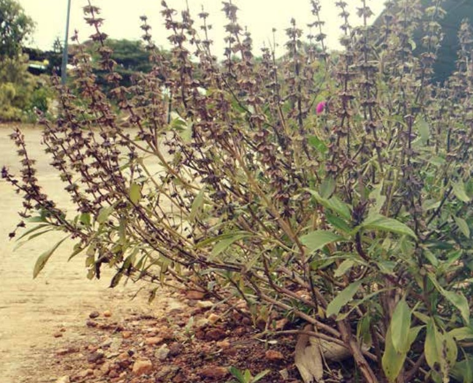

Bude Gida (Balloon Vine)

Scientific name: Cleome gynandra L.
Usage: Cultural and religious purposes (offerings to god and used as a decoration)
Where to find it: Often cultivated in home gardens, open lands lands
Parts used: Leaves
Habit: Herb
Description: An annual herb with a green quadrangular stem, woody base and strong aroma. Leaves are ovate-lanceolate, acute at apex, entire and hairy. Inflorescence (racemes) are terminal, usually branched at base, bracts are usually deep purple. The tiny purple or white flowers arranged in flattened whorls encircle the stems. Corolla lipped, long white or pale purple. Fruits are nutlets and gellike when wet.
Nutritional properties: Ocimum basilicum is a common culinary herb, and the flavour it imparts varies with the variety and the hybrid.